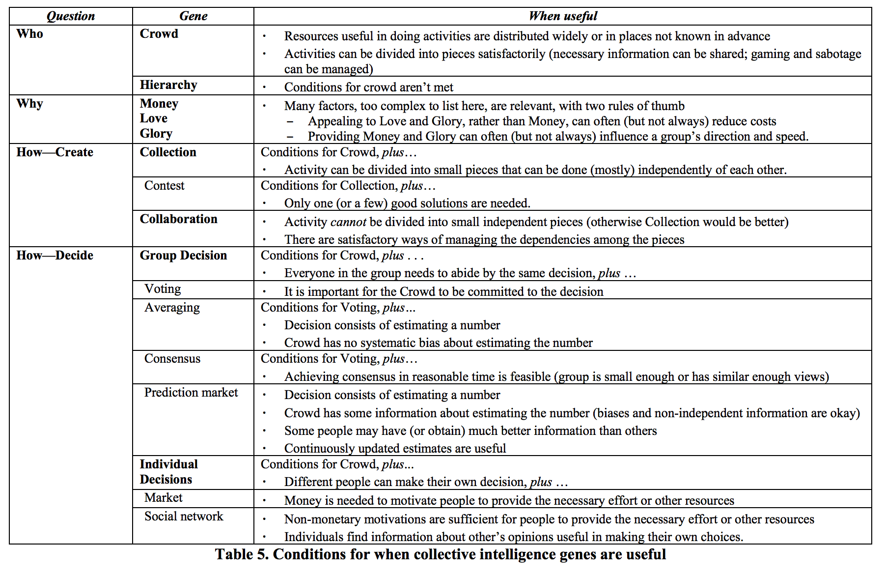

Developed with ❤ by

Information Innovation Lab
Applied research and development of public interest technology.
Harnessing Crowds: Mapping the Genome of Collective Intelligence
This paper proposes an interesting reading grid for how Open Integrity positions itself in terms of a participative effort.

In the question of "who?" the paper proposes Hierarchy and Crowd as possible "Genes". In that sense Open Integrity is both an expertise led effort - where community of practices are an organising principle - and a Crowd-led or open participation project in the sense that it doesn't enforce any control on who can participate and allows anonymous participation.
As a consequence there should be clear rules of engagement (including a meritocratic assignment of moderation roles) and an enforced code of conduct.
The question of incentives is one that we've been thinking about a lot. The question is posed for each of the potential participants in the OII effort which are:
In addition more broadly, in the Open Integrity Ecosystem we engage with the following stakeholders in interactions that also have participative and collective intelligence aspects:
We'll develop our thoughts progressively on incentives on this platform, and use the paper's "Genes" - Money, Love, Glory - as a grid to exercise our thinking.
Again different part of Open Integrity have different approaches with regards to what the collective effort aims for. Broadly speaking:
| OII Component | Who | Why | What | How |
|---|---|---|---|---|
| Initiative | iilab | mission | leadership | orchestration |
| Framework - Impact | users/responders | mission | create - Report | collection |
| Framework - Impact | users/responders | mission | decide - Verify | consensus |
| Framework - Impact | users/responders | mission | decide - Analyse | consensus |
| Framework - Practices | experts | love/glory? | create - Practices | collection |
| Framework - Practices | experts | love/glory? | decide - Best | consensus |
| Framework - Metrics | "measurers" | love/glory? | create - Sources | individual |
| Framework - Metrics | "measurers" | love/glory? | create - Agents | individual |
| Framework - Metrics | iilab / advisors | mission | decide - Taxonomy | consensus |
| Data | developers | glory/money | create/update - Entries | individual |
| Data | reviewers | love/glory? | create/update - Entries | individual |
| Data | job seekers | money | create/update - Entries | individual |
| Data | reviewers | love/glory? | create - Claims | individual |
| Data | moderators | love/glory? | decide - Dispute | consensus |
Open Integrity needs your help to provide the best and most up to date information. Get in touch to join the initiative !
Get in touchApplied research and development of public interest technology.